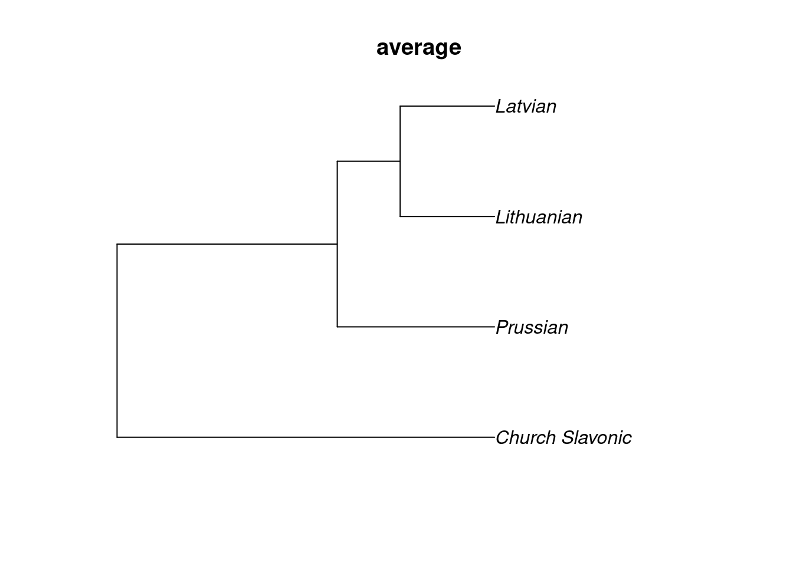

Code
library(tidyverse)
theme_set(theme_bw()+theme(text = element_text(size = 16)))
library(phangorn)library(tidyverse)
theme_set(theme_bw()+theme(text = element_text(size = 16)))
library(phangorn)Кластеризация — это не метод, а задача, для решение которой придумано множество алгоритмов. Не существует “правильных” методов кластеризации, так как “clustering is in the eye of the beholder” (Estivill-Castro 2002). Существует много семейств алгоритмов, для нас важны два:
Иерархическая кластеризация, которую мы сегодня обсуждаем основана на объеденении чисел — значений расстояния между разными объектами, так что сначала нужно обсудить, что такое матрица расстояния.
Матрица расстояний — это матрица n × n, которая содержит значения меры расстояния/сходства между объектами в метрическом пространстве. Существует уйма мер расстояния/сходства, выбор из которых зависит от типа данных. К сожалению, не существует универсального алгоритма выбора метода, так что это остается на откуп исследователям. Кроме того, схожие методы, зародившиеся в биологии, называют string metric: они определяют расстояния между графическими репрезентациями объектов (расстояние Хэмминга, расстояние Левинштейна и т. п.).
Представим вот такие данные для нескольких языков:
| lang | word_1 | word_2 | word_3 | word_4 | word_5 |
|---|---|---|---|---|---|
| Lithuanian | 1 | 1 | 1 | 1 | 0 |
| Latvian | 1 | 1 | 1 | 0 | 0 |
| Prussian | 1 | 1 | 0 | 0 | 0 |
| Church_Slavonic | 0 | 0 | 0 | 0 | 1 |
Существует множество мер для анализа бинарных данных. Самый распространенный — коэффициент Жаккара. Для каждой пары идиомов строим вот такую таблицу:
| идиом i | |||
|---|---|---|---|
| 1 | 0 | ||
| идиом j | 1 | a | b |
| 0 | c | d |
А дальше мы считаем меру сходства:
\[s(i, j)=\frac{a}{a+b+c}\]
В работе (Gower and Legendre 1986) есть и другие методы (14 шт.). Большинство из них есть в функции dist.binary() пакета ade4.
Дальше можно использовать функцию dist() с аргументом binary:
df %>%
column_to_rownames(var = "lang") %>%
dist(method = "binary") Lithuanian Latvian Prussian
Latvian 0.2500000
Prussian 0.5000000 0.3333333
Church_Slavonic 1.0000000 1.0000000 1.0000000Расстояние между литовским и латышским 0.25, так как у них 4 не нулевых слова, а совпадают они в трех, так что мера сходства (similarity) равна 3/4, а мера отличия (dissimilarity) равна 1 - мера сходства = 1/4 = 0.25.
Многие предпочитают визуализировать матрицу расстояния при помощи тепловой карты (heatmap):
df %>%
column_to_rownames(var = "lang") %>%
dist(method = "binary") %>%
broom::tidy() %>%
add_count(item1) %>%
mutate(item1 = fct_reorder(item1, -n),
item2 = fct_reorder(item2, -n)) %>%
ggplot(aes(item1, item2))+
geom_tile(aes(fill = distance), colour = "white") +
geom_text(aes(label = str_c(round(distance*100), "%")), colour = "white") +
scale_fill_gradient(low = "lightblue", high = "navy")+
coord_fixed()+
labs(x = "", y = "") Иерархические кластеризации бывают двух типов:
Кроме того есть очень много разным методов:
ward.Dward.D2singlecompleteaverage (= UPGMA)mcquitty (= WPGMA)median (= WPGMC)centroid (= UPGMC)На наших фейковых данных разные алгоритмы дают разные результаты:
df %>%
column_to_rownames(var = "lang") %>%
dist(method = "binary") %>%
hclust() %>%
as.phylo() %>%
plot(main = "complete")method_for_clustering <- "ward.D"
df %>%
column_to_rownames(var = "lang") %>%
dist(method = "binary") %>%
hclust(method = method_for_clustering) %>%
as.phylo() %>%
plot(main = method_for_clustering)method_for_clustering <- "ward.D2"
df %>%
column_to_rownames(var = "lang") %>%
dist(method = "binary") %>%
hclust(method = method_for_clustering) %>%
as.phylo() %>%
plot(main = method_for_clustering)method_for_clustering <- "single"
df %>%
column_to_rownames(var = "lang") %>%
dist(method = "binary") %>%
hclust(method = method_for_clustering) %>%
as.phylo() %>%
plot(main = method_for_clustering)method_for_clustering <- "average"
df %>%
column_to_rownames(var = "lang") %>%
dist(method = "binary") %>%
hclust(method = method_for_clustering) %>%
as.phylo() %>%
plot(main = method_for_clustering)
method_for_clustering <- "average"
df %>%
column_to_rownames(var = "lang") %>%
dist(method = "binary") %>%
hclust(method = method_for_clustering) %>%
as.phylo() %>%
plot(main = method_for_clustering)
method_for_clustering <- "mcquitty"
df %>%
column_to_rownames(var = "lang") %>%
dist(method = "binary") %>%
hclust(method = method_for_clustering) %>%
as.phylo() %>%
plot(main = method_for_clustering)method_for_clustering <- "median"
df %>%
column_to_rownames(var = "lang") %>%
dist(method = "binary") %>%
hclust(method = method_for_clustering) %>%
as.phylo() %>%
plot(main = method_for_clustering)method_for_clustering <- "centroid"
df %>%
column_to_rownames(var = "lang") %>%
dist(method = "binary") %>%
hclust(method = method_for_clustering) %>%
as.phylo() %>%
plot(main = method_for_clustering)Алгоритм неиерархической кластеризации (Bryant and Moulton 2004) работает той же самой матрице расстояний:
df %>%
column_to_rownames(var = "lang") %>%
dist(method = "binary") %>%
neighborNet() %>%
plot()Проблемы:
db <- read_csv("https://raw.githubusercontent.com/LingConLab/rutul_dialectology/master/data/database.csv")
db %>%
group_by(feature_title, settlement) %>%
slice_sample(n = 1) %>%
select(feature_title, settlement, value) %>%
na.omit() %>%
mutate(f_new = str_c(feature_title, value),
value = 1) %>%
ungroup() %>%
select(settlement, f_new, value) %>%
pivot_wider(names_from = f_new, values_from = value,
values_fill = 0) %>%
column_to_rownames(var = "settlement") %>%
dist(method = "binary") ->
settlement_dist
settlement_dist %>%
broom::tidy() %>%
add_count(item1) %>%
mutate(item1 = fct_reorder(item1, -n),
item2 = fct_reorder(item2, -n)) %>%
ggplot(aes(item1, item2))+
geom_tile(aes(fill = distance), colour = "white") +
geom_text(aes(label = str_c(round(distance*100), "%")), colour = "white") +
scale_fill_gradient(low = "lightblue", high = "navy")+
coord_fixed()+
labs(x = "", y = "") +
theme(axis.text.x = element_text(angle = 90))settlement_dist %>%
hclust() %>%
as.phylo() %>%
plot()settlement_dist %>%
neighborNet() %>%
plot()